Chez GreenItCar, nous sommes fiers de nos réalisations qui témoignent de notre expertise et de notre engagement envers l'excellence. Nous avons travaillé sur une variété de projets pour des clients de différents secteurs, en fournissant des solutions innovantes et personnalisées.
Développement de Manda_Yé, une application mobile hybride de formation en ligne disponible sur le Play Store. L'application permet aux utilisateurs de s'inscrire en ligne puis d'accéder aux contenus en mode hors ligne : consultation des cours, suivi de la progression et reprise des sessions sans connexion. Nous y avons intégré un éditeur de code fonctionnant entièrement hors ligne pour que les apprenants en programmation puissent pratiquer et tester leurs exercices en toute autonomie. Ce projet représentait un défi technique important que nous avons relevé avec succès.
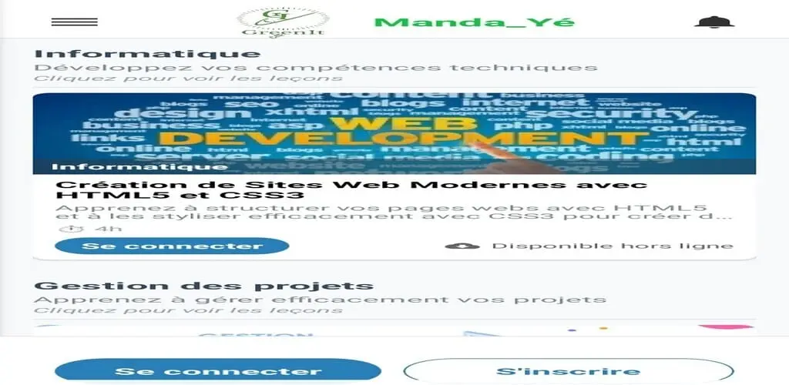
.webp)
.webp)
.webp)
.webp)
.webp)
Dans le but de digitaliser les services administifs dans notre continent africain et dans notre pays la République Centrafricaine en particulier, nous avons constaté un problème au milieu jeune dans la recherche d'emploi et de stage. Où il faut toujours se deplacer aux sièges des entreprises/ONG pour avoir les informations sur les offres ou à l'ACFPE. Pour cela nous avons donc voulu proposer une solution qui permettrait aux jeunes de trouver facilement leurs offres et de se connecter directement aux entreprises et ONG partenaires peu importe leur position géographique sur le territoire centrafricain. C'est ainsi que nous avons développé Tenetikwa, un agrégateur d'offres d'emploi et de stage qui centralise les annonces des entreprises et ONG et les rend accessibles à tous en ligne en quelque clics. Tenetikwa est disponible en ligne ici tenetikwa.app
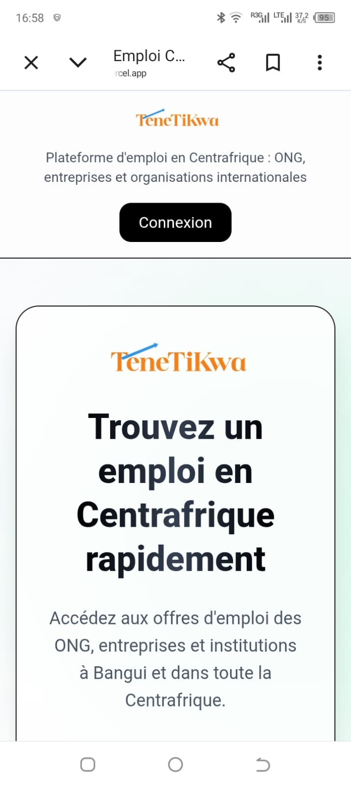
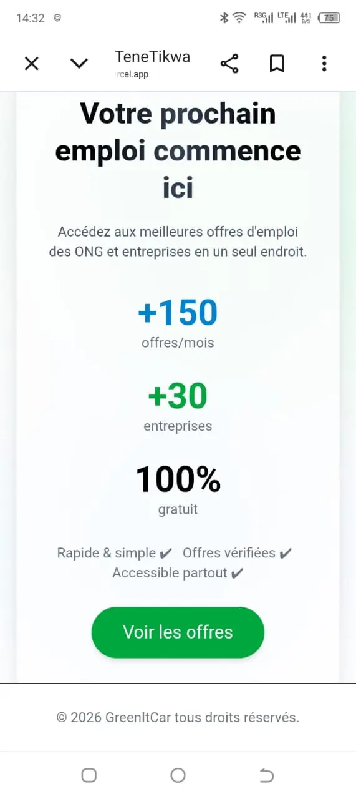
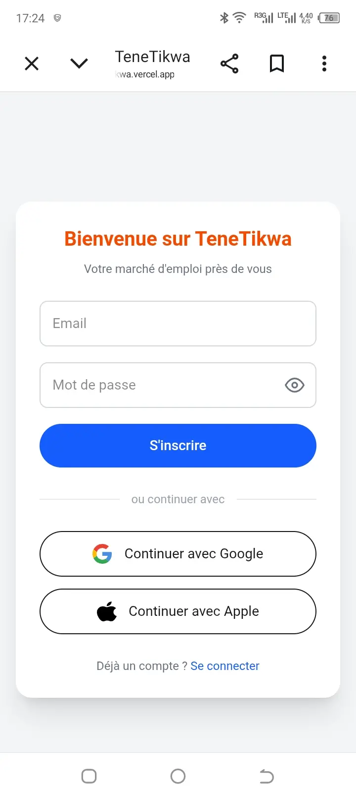
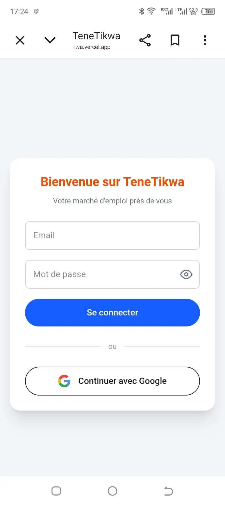
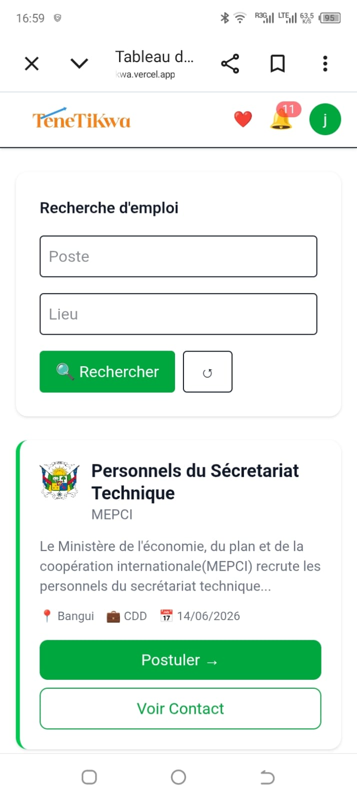
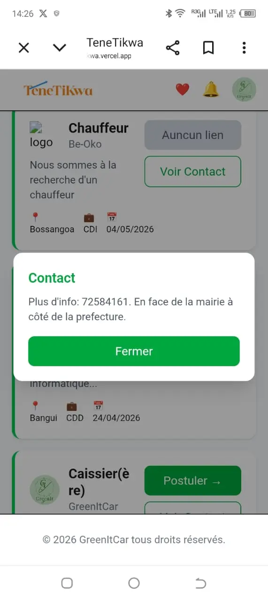
Création plateforme de proclamation des examens. Il etait question de digitaliser la proclamation des examens et concours en République Centrafricaine. Donc notre équipe d'experts a proposé au gouvernement la plateforme EResultat qui permet aux candidats d'avoir accès a leurs résultats en temps réel. Une solution innovante et efficace pour améliorer l'accès aux résultats académiques.
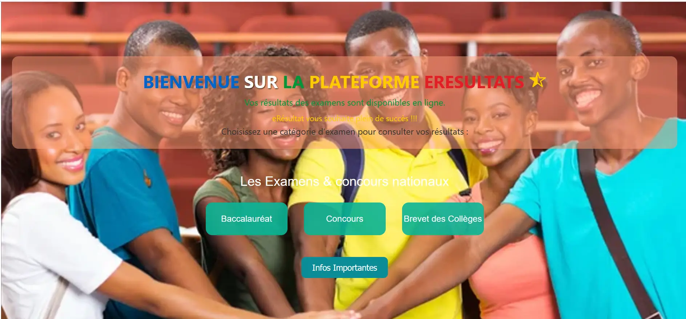
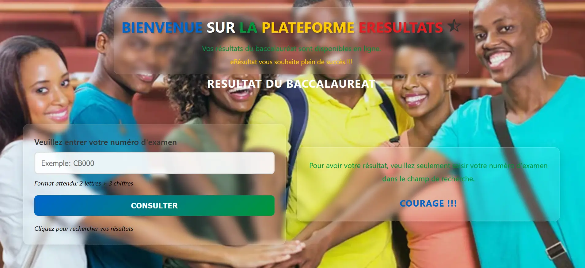
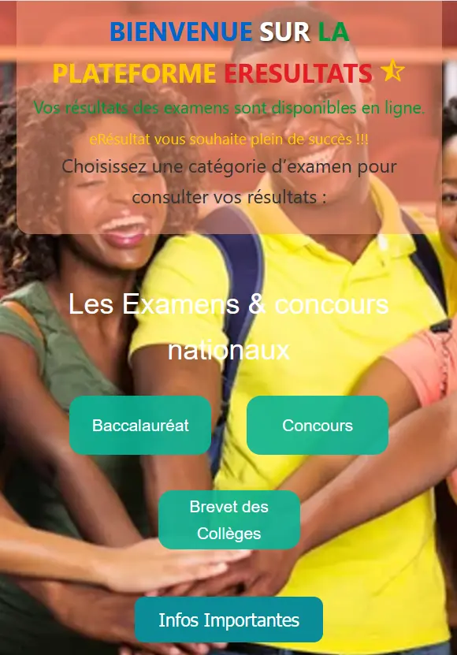
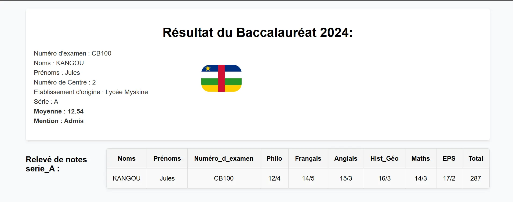
Développement d’une plateforme digitale de services immobiliers pour une entreprise partenaire. Dans le cadre de ce projet, nous avons collaboré étroitement avec une entreprise spécialisée dans les prestations immobilières afin de concevoir une solution numérique complète et performante. Cette plateforme permet aux professionnels du secteur (plombiers, électriciens, techniciens gaz, etc.) de s’inscrire et de proposer leurs services directement aux clients. Les locataires peuvent ainsi accéder facilement à une large gamme de prestataires qualifiés, sans avoir à se déplacer, et effectuer leurs demandes en quelques clics. La plateforme intègre également des fonctionnalités de paiement en ligne, permettant le règlement des factures de services ainsi que des loyers en toute sécurité. Ce projet a été mené dans un contexte exigeant, avec de nombreuses contraintes techniques, que nous avons su maîtriser grâce à une approche rigoureuse et une expertise adaptée.
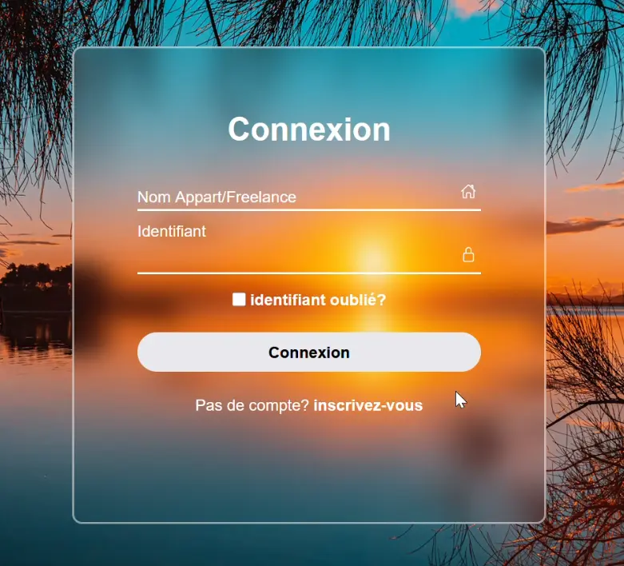
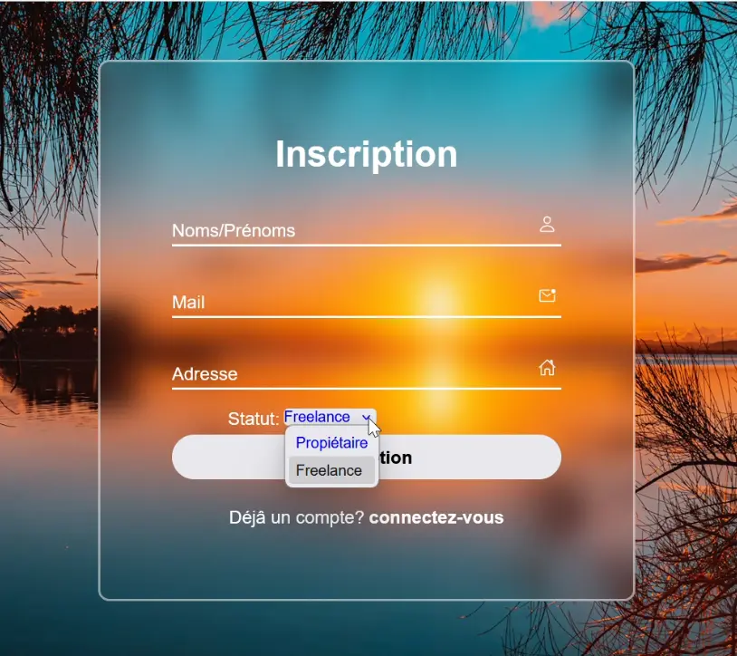
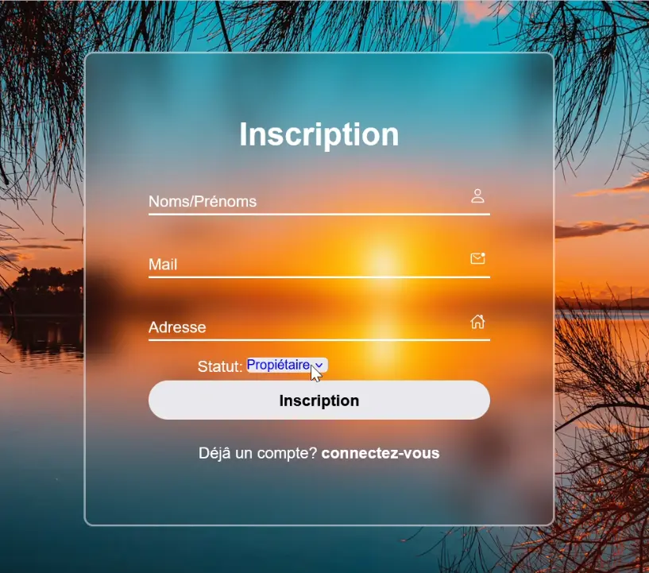
Le Développement de notre Site internet. Nous avons choisi de créer un site moderne et responsive qui met en valeur nos services et nos réalisations.
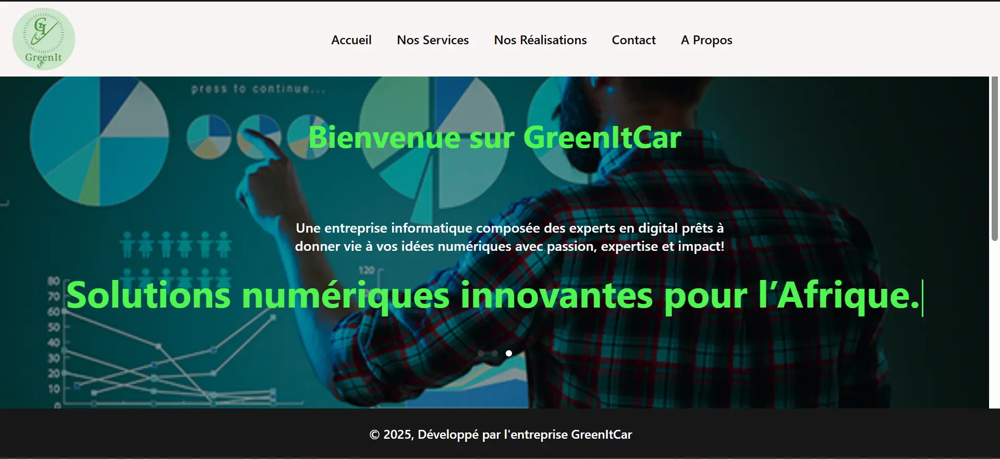
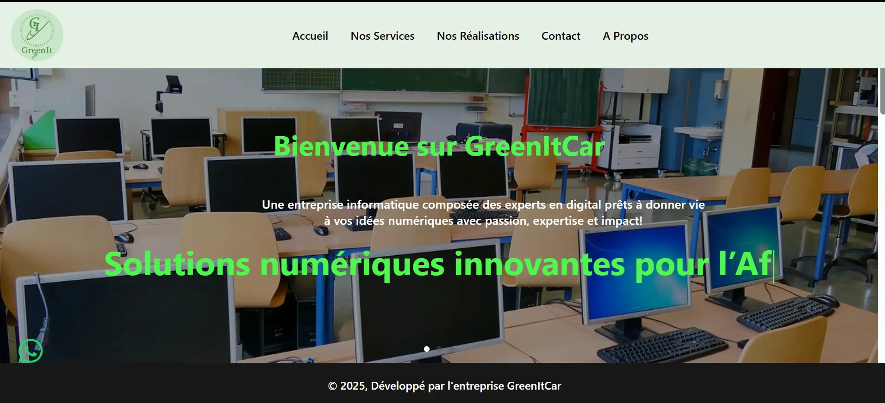
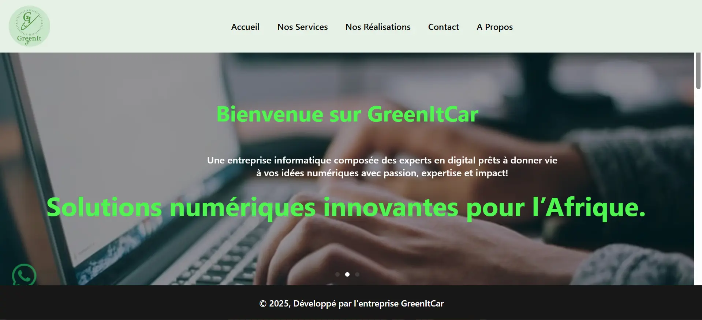
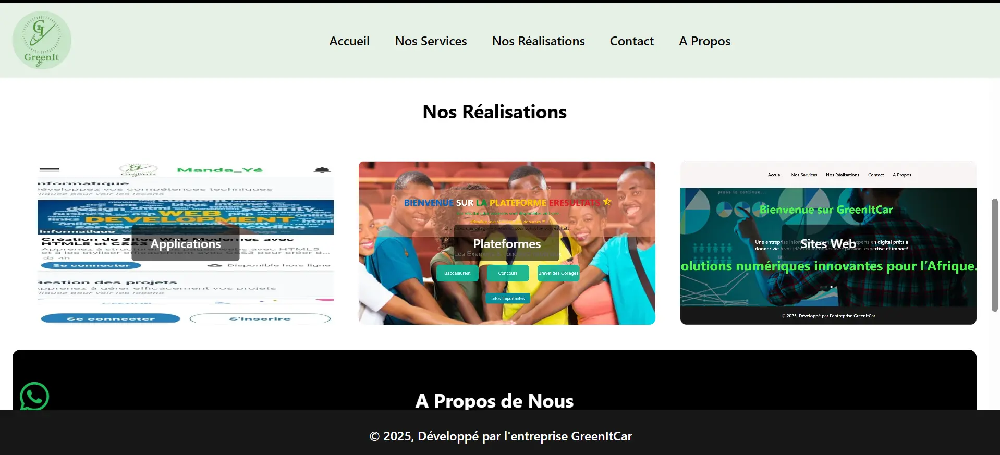
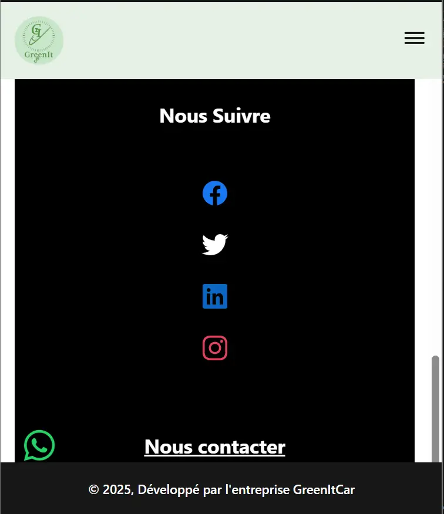
Nous sommes une équipe des jeunes passionnée et expérimentée, dédiée à fournir des solutions de qualité supérieure dans le domaine du numérique. Notre approche personnalisée nous permet de comprendre les besoins uniques de chaque client et de créer des solutions sur mesure qui répondent à leurs objectifs spécifiques. Nous utilisons les dernières technologies et les meilleures pratiques pour garantir que chaque projet est réalisé avec excellence et efficacité. Nous sommes fiers de notre travail et de notre engagement dans la satisfaction de nos clients.